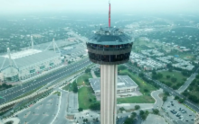
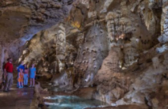

Tower of The Americas
Located in downtown San Antonio, the 750-foot-tall Tower of the Americas provides guests the most spectacular view of the Alamo City.
Learn more about the Tower of The Americas →
|

Natural Bridge Caverns
The 7th longest cavern system in Texas and Texas’ most actively explored cavern? That would be Natural Bridge Caverns!
Learn more about the Natural Bridge Caverns →
|
Viva Fiesta
Fiesta San Antonio is an annual festival held in April in San Antonio, Texas, and is the city's signature event since 1891.
Learn more about the history
of Fiesta →
|